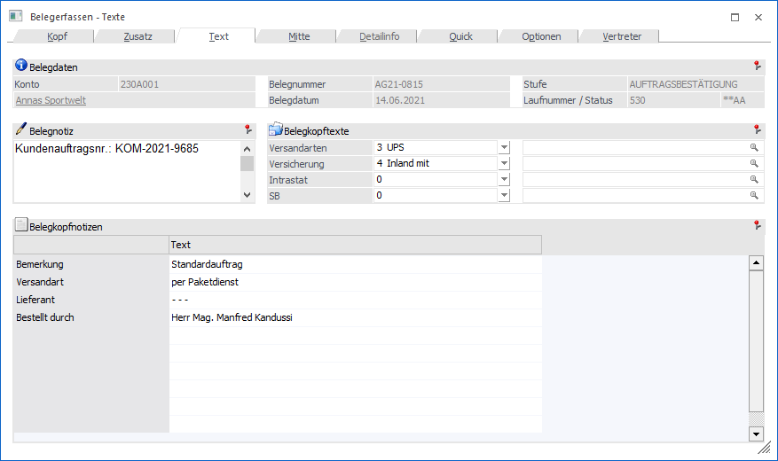
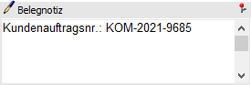
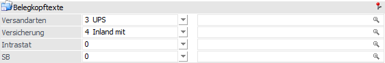
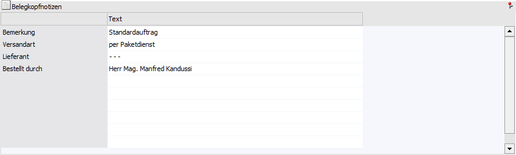
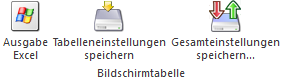

In dem Register "Text" kann ein Beleg mit zusätzlichem Informationstext versehen werden.
Hinweis
Weitere Informationen bezüglich des Erfassens von Belegen und den Buttons des Programms "Belegerfassen" sind dem Kapitel Belegerfassen zu entnehmen.

Folgende Eingabefelder, Einstellungen und Information stehen zur Verfügung:
Belegdaten

Ø Konto
An dieser Stelle wird die Nummer des Hauptkontos (WinLine START - Parameter - FAKT-Parameter - Belege - Allgemein - Option "Hauptkonto für Belege") des aktuellen Belegs angezeigt.
Ø Name
An dieser Stelle wird der Kontoname der Kontonummer dargestellt und das Fenster Kontoinformation kann direkt geöffnet werden.
Ø Belegnummer
An dieser Stelle wird die Belegnummer des Belegs angezeigt.
Ø Belegdatum
Hier wird das Belegdatum des Belegs dargestellt.
Ø Stufe
An dieser Stelle wird die Belegstufe des Belegs angezeigt. Wird ein Beleg in eine nachfolgende Belegstufe gewandelt, so wird hier die "Zielbelegstufe" dargestellt, die Laufnummer stammt hingegen noch vom "Ausgangsbeleg".
Ø Laufnummer/Status
Hier wird die Laufnummer, sowie der Staus des Beleges und dessen Folgestufen angezeigt.
Belegnotiz

Ø interne Belegmemo
An dieser Stelle kann die Notizblock-Funktion (RTF-Feld) von WinLine genutzt werden, um bis zu 2000 Zeichen Freitext im Belegkopf zu erfassen.
Hinweis
Die ersten 50 Zeichen des Textes können im Belegmanagement optional angezeigt werden.
Belegkopftexte

Ø Belegkopftexte
Im Programmbereich "Belegkopftexte" (WinLine FAKT - Belegstammdaten) können 4 individuelle Auswahlen definiert werden, welche an dieser Stelle genutzt werden können. Hierbei haben die Belegkopftexte grundsätzlich folgende Aufgaben:
ü Zuweisung des Belegs zu einer Versandart für die Kommissionierung
ü Zuweisung des Belegs zu einem Funktionscode für Intrastat
ü Zuweisung des Belegs zu einem Funktionscode für ATLAS
Zusätzlich können in den Belegkopftexten auch Makros hinterlegt werden. Diese Makros werden zusätzlich zum Belegendmakro im Beleg verwendet, wenn der entsprechende Belegkopftext ausgewählt wird. Diese Belegkopftext-Makros werden dann vor dem Belegendmakro ausgeführt.
Hinweis
Im Personenkontenstamm (Register "FAKT") kann pro Personenkonto eine individuelle Vorgabe für die Belegkopftexte definiert werden.
Belegkopfnotizen

Ø Belegkopfnotiz 1 bis 10
An dieser Stelle stehen bis zu 10 Textzeilen zur Verfügung, in denen spezifische wiederkehrende Textierungen (max. 60 Zeichen pro Text) hinterlegt werden können (z.B. Frachtbedingungen, Spediteur, Kurzbeschreibung des Beleginhaltes oder Art des Geschäftsfalles).
Hinweis 1
Wenn Projekte bei Belegerzeugung automatisch angelegt werden sollen (definierbar in der Belegart, siehe auch Feld "Projektnummer" im Kapitel Belegerfassen - Register "Kopf"), dann wird der Inhalt von "Notiz1" in das Stammdatenfeld "Bezeichnung1" des Projekts übernommen. Ist das Feld "Notiz1" leer, dann wird das Feld "Bezeichnung1" wird mit "Kontoname/Belegnummer" gefüllt.
Hinweis 2
Die Führungstexte (Beschreibung) dieser Notizzeilen können in dem FAKT-Parametern (WinLine START - Parameter - Applikations-Parameter - FAKT-Parameter - Belege - Allgemein - Option "Führungstexte für Belegkopfnotizen") definiert werden.
Tabellenbuttons

Ø Ausgabe Excel
Durch Anwahl des Buttons "Ausgabe Excel" wird der Inhalt der Tabelle nach Microsoft Excel übergeben.
Ø Tabelleneinstellungen speichern
Die Spalten einer Tabelle können grundsätzlich an beliebige Positionen verschoben, bzw. in der Breite entsprechend angepasst werden. Durch Anwahl des Buttons "Tabelleneinstellungen speichern" werden die Einstellungen benutzerspezifisch gespeichert und bei dem nächsten Aufruf des Programmpunktes wieder vorgeschlagen.
Ø Gesamteinstellungen speichern…
Im Gegensatz zu "Tabelleneinstellungen speichern" können mit "Gesamteinstellungen speichern" mehrere Tabellenaufbauten gespeichert und nach Wunsch geladen werden. Zusätzlich werden Sonderfunktionen der Tabelle (z.B. "Spalte gruppieren") ebenfalls bei der Speicherung bedacht.